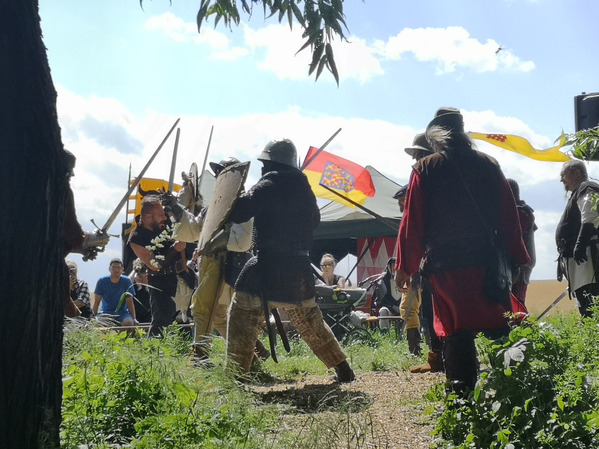

Fotogalerie
Na této stránce budou fotografie z výstavby, akcí i života v Pralesáku.
Pralesák vzniká díky nadšení a práci mnoha lidí. Na této stránce naleznete malou ukázku fotografií ze stavby, brigád, historických akcí i společných setkání Harcířů.




Kompletní kronika Pralesáku
Další fotografie naleznete v naší online galerii na Zoneramě. Budeme rádi, pokud budete společné zážitky průběžně doplňovat a pomůžete tak vytvářet kroniku Pralesáku pro budoucí generace Harcířů.
📷 Otevřít kompletní fotogalerii